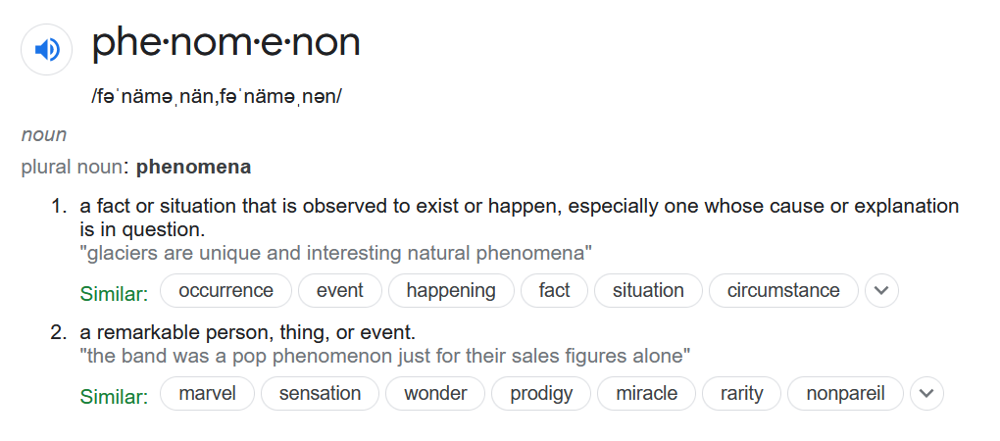
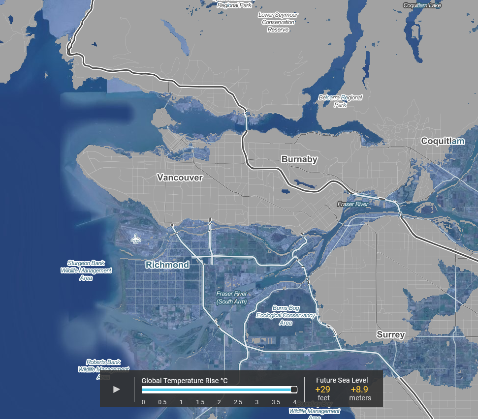
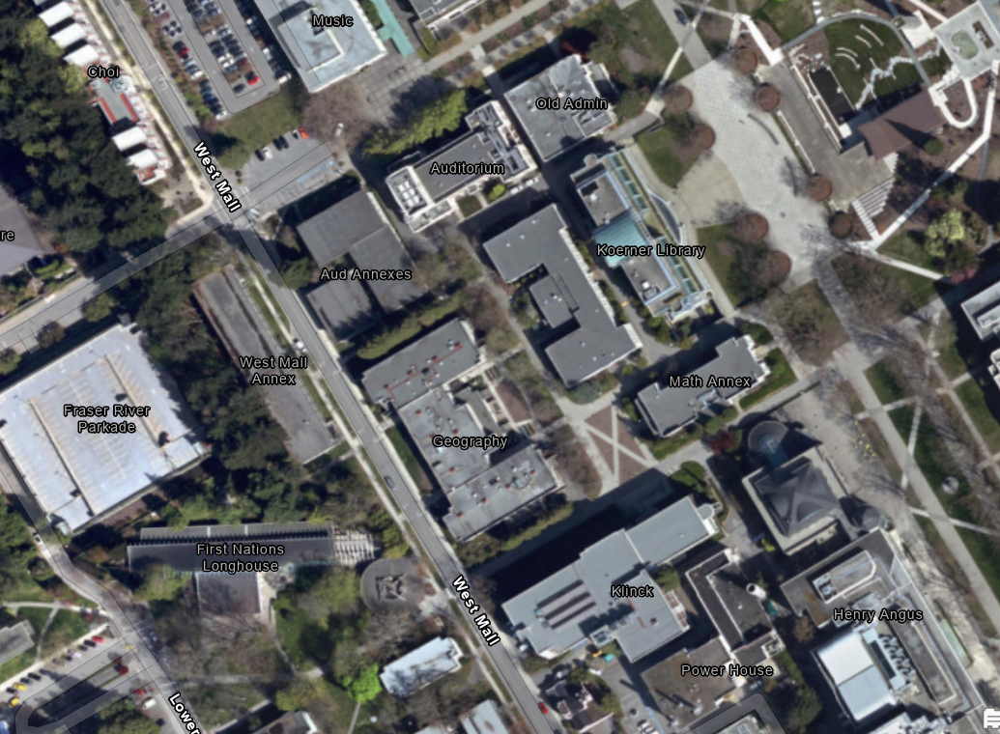
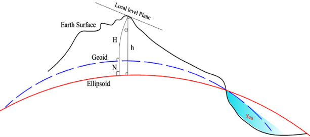
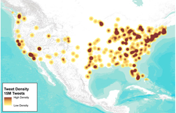
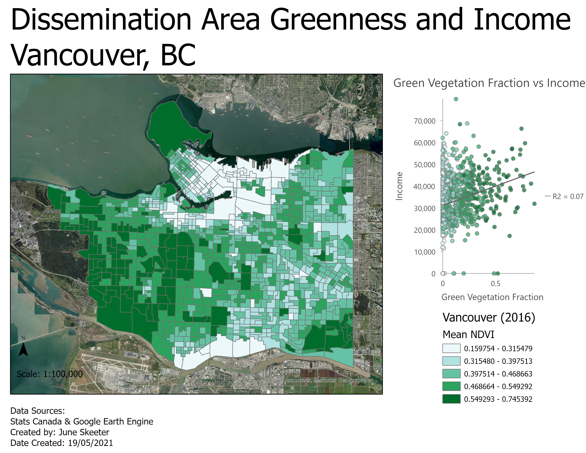

What is a Phenomenon?

What is a Phenomenon?
A lightning strike
What is a Phenomenon?
A Country

What is a Phenomenon?
A Coastline
What is a Phenomenon?
A dog on a kayak!
Anything and everything are phenomena!

Types of Phenomena
Discrete Objects: Distinct boundaries
Continuous Fields:Lack Distinct boundaries
Types of Phenomena
Discrete Objects: Distinct boundaries
-Dimensions can be exactly measured
Continuous Fields:Lack Distinct boundaries
-Everywhere has a value
Types of Phenomena
Whether a phenomenon is discrete or continuous depends on scale. It also depends on our perspective. Some phenomenon are a bit of both.
Lightning
-A strike is a discrete object
-A lighting bolt ...?
Lightning
-A strike is a discrete object
-Strike frequency is a continuous field

Coastline
-At a large scale a continuous field
Coastline
-At a large scale a continuous field
-At a small scale a discrete object

Coastline
-At a large scale a continuous field
-At a small scale a discrete object
-Unless you change the time scale

Types of Phenomena
All that said, its helpful for us to think about the discrete v. continuous dichotomy. As long as we recognize that it's not a perfect classification.
Discrete Objects
Buildings
-Concrete Boundaries
-Countable
-Real Physical Object

Discrete Objects
National & Sub-National Boundaries
-Distinct Boundaries
-Countable
-Not a Physical Object
Continuous Fields
Elevation
-Everywhere on Earth
-No "number of elevations"
-A physical property


Continuous Fields
Density of tweets
-Everywhere has this too
-Derived from something countable
-Not a physical property

Working Together
In Module 1, you used discrete data (deaths) to calculate a continuous field (Kernel Density).

Working Together
In Module 3, you sample a continuous field (NDVI) using discrete boundaries.
